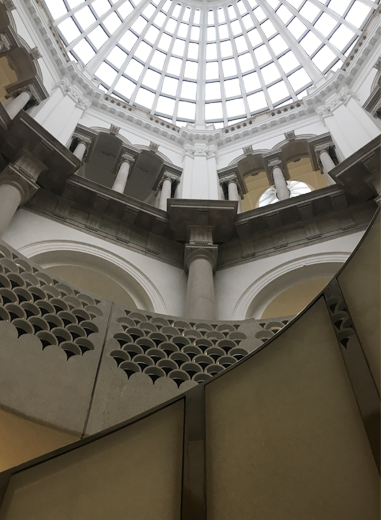
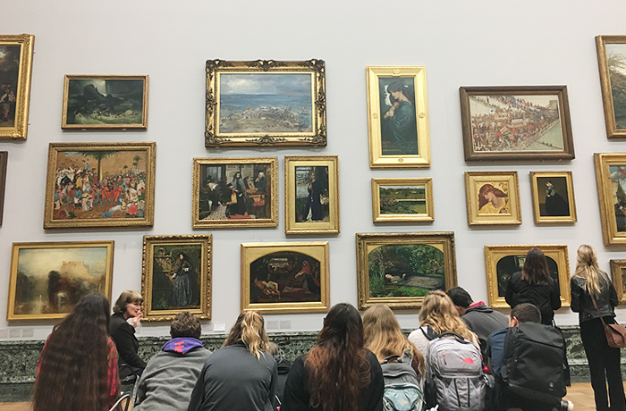

TATE BRITAIN
https://www.tate.org.uk/visit/tate-britain
テューダー朝から現代までのイギリス美術が年代順に展示されていて、超有名絵画がそこここにさりげなく展示されているのを発見できます。美術館の建物自体もとても美しく、外観や内観を見るだけでも楽しめます。


テューダー朝から現代までのイギリス美術が年代順に展示されていて、超有名絵画がそこここにさりげなく展示されているのを発見できます。美術館の建物自体もとても美しく、外観や内観を見るだけでも楽しめます。